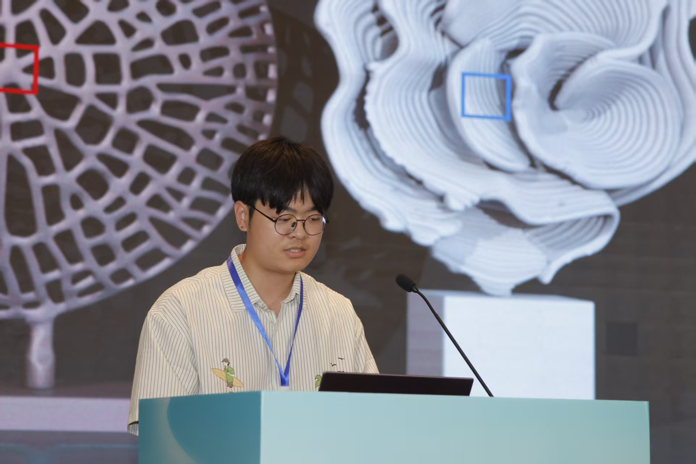
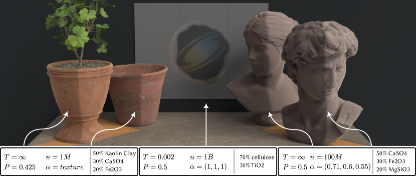
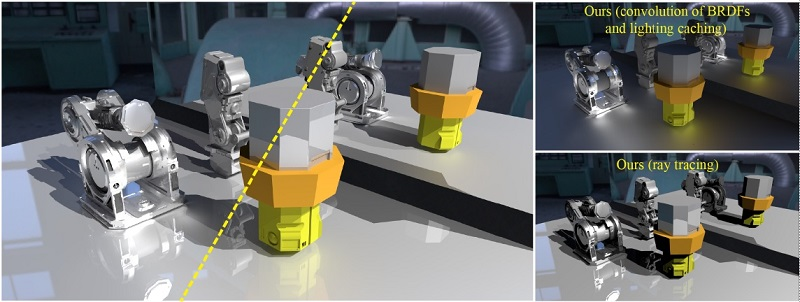
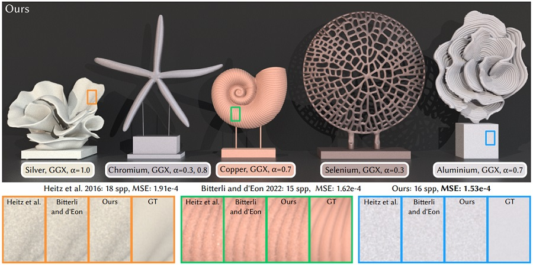
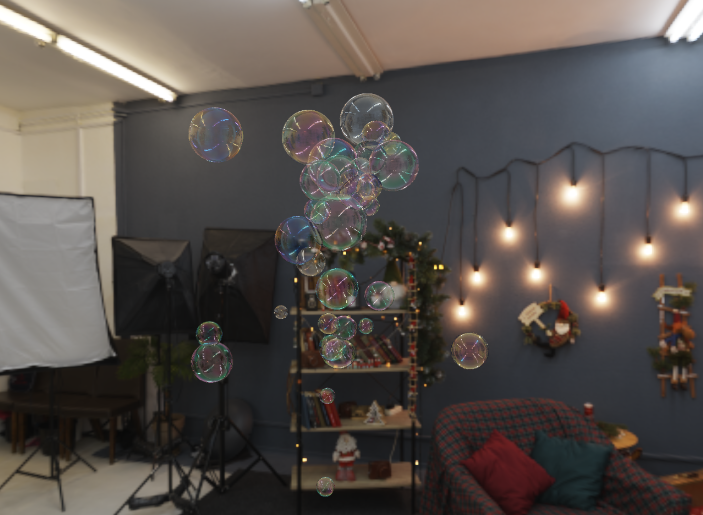

GaolePan

I study how materials look, and how to render them.
Ph.D. student at Nanjing University, advised by Prof. Beibei Wang.
Most of my work starts from a surface that existing models get wrong. Lately that means porous materials that change as they soak up water, light that bounces several times between microfacets before it leaves, and recovering a surface's microstructure from images of it.
Research
-
Wet material rendering
Porous materials look different once water gets into them: darker, more saturated, glossier. I build appearance models that follow that change.
-
Microstructure reconstruction
Working backwards from images to the small-scale geometry of a surface, and to the statistics that describe it.
-
Physically based rendering
Light transport in materials with complicated internal structure, including the multiple bounces that simpler models leave out.
Publications
-

-

Computational Visual Media2024
Real-time All-frequency Global Illumination with Radiance Caching
-

SIGGRAPH Asia2023
Multiple-bounce Smith Microfacet BRDFs using the Invariance Principle
Projects
-

Interactive WebGL2Competition projectInteractive demo
Bubble Rendering Demo
Soap bubbles you can play with in the browser. Thin-film interference follows Belcour's model, with HDR reflection and transmission. Bubbles wobble, collide, share a film where they touch, and build up into foam. Ported to WebGL2 from the original HarmonyOS/OpenGL ES version.
Open the demo
Education
-
Nanjing University
Ph.D. student in Computer Science and Technology (current)
-
Nanjing University of Science and Technology
M.S. in Computer Science and Technology
-
Harbin Engineering University
B.Eng. in Computer Science and Technology
Contact
Email is the best way to reach me. I'm glad to talk about rendering, materials, or working on something together.
gaolepan@smail.nju.edu.cnGitHub: github.com/PPPGLL